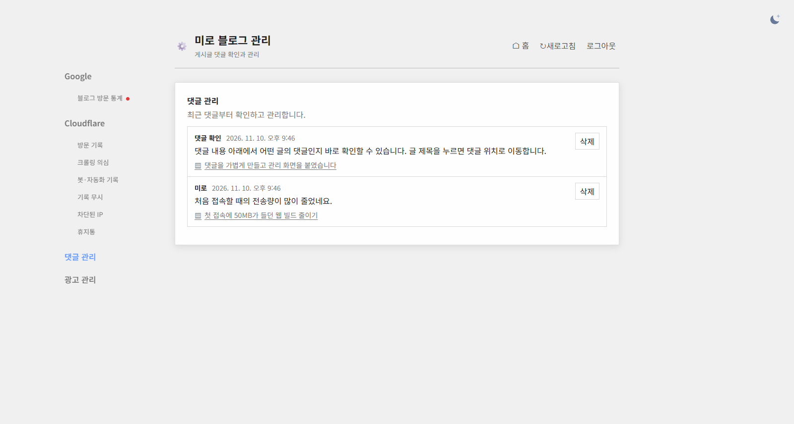
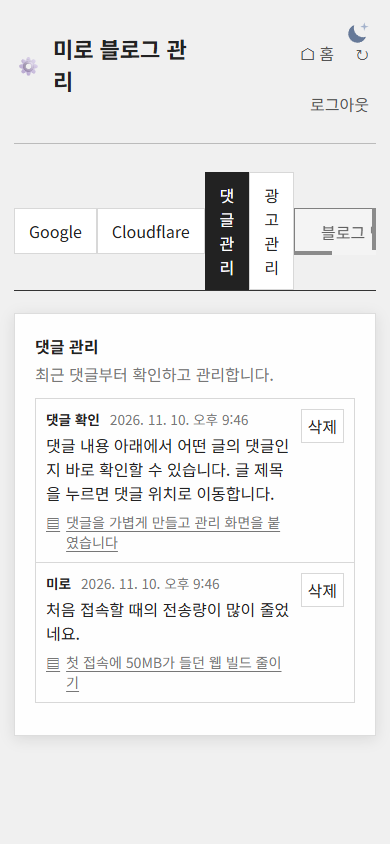

Tracefolio REPORTS & ISSUES
Tracefolio REPORTS & ISSUES관리자 댓글 목록을 행으로 정리하고 원글 제목 연결
완료작성자와 시각, 댓글 본문, 클릭할 수 있는 원글 제목을 행마다 표시합니다.
작업 결과
관리자 댓글 탭에 새 행 레이아웃을 배포했습니다. 댓글 아래 글 제목을 누르면 해당 글의 댓글 위치로 이동합니다.
변경 내용
적용 내용
admin/comments-panel.html에서 댓글을 작성자·시각, 본문, 원글 제목 순으로 배치하고 삭제 버튼을 오른쪽에 뒀습니다. 기존 관리자 탭과 대시보드 테마를 사용합니다.admin/comments.mjs에서 공개 검색 색인의 경로와 댓글의 게시물 경로를 맞춰 제목을 가져옵니다. 색인에서 확인할 수 없는 글은 경로 식별자를 표시해 관리 동작이 계속됩니다.
async function postTitles(blog) {
try {
const response = await fetch(blog + '/search-index.json', {signal: AbortSignal.timeout(2500)});
if (response.ok) {
const index = await response.json();
return new Map(index.map(([title, , , path]) => [path, title]));
}
} catch {
// A temporary index error must not prevent moderation.
}
return new Map();
}
function render(comment) {
const item = document.createElement('li');
const content = document.createElement('div');
const meta = document.createElement('div');
meta.className = 'comment-meta';
const name = document.createElement('strong');
name.textContent = comment.nickname;
const time = document.createElement('time');
time.dateTime = comment.created_at;
time.textContent = date.format(new Date(comment.created_at));
const body = document.createElement('p');
body.textContent = comment.body;
const link = document.createElement('a');
link.className = 'comment-post';
link.href = comment.postUrl;
const icon = document.createElement('span');
icon.setAttribute('aria-hidden', 'true');
icon.textContent = '▤';
const title = document.createElement('span');
title.textContent = comment.postTitle;
link.append(icon, title);
const remove = document.createElement('button');
remove.className = 'record-policy';
remove.type = 'button';
remove.textContent = '삭제';
remove.setAttribute('aria-label', comment.nickname + '님의 댓글 삭제');
remove.addEventListener('click', () => removeComment(comment.id, remove));
meta.append(name, time);
content.append(meta, body, link);
item.append(content, remove);
return item;
}
flowchart LR A["관리자 댓글 목록 요청"] --> B["D1 댓글 조회"] B --> C["공개 검색 색인의 글 경로와 제목 조회"] C --> D["행에 작성자·시각·본문·원글 제목 표시"] D --> E["제목 클릭"] E --> F["해당 게시물 댓글 위치로 이동"]
대화 기록
- 사용자 (시각 미기록) · “티스토리 댓글 관리 페이지 처럼 레이아웃 구성해줘 게시물 이름도 보이게 하고 그걸 누르면 이동하고”
- AI (21:46 KST) · 댓글을 행으로 정리하고 실제 글 제목과 클릭 이동을 확인했습니다.
- AI (21:47 KST) · 운영 Worker에서 새 목록 코드를 확인했습니다.
검증
- 로컬 관리자 로그인에서 실제 제목 “첫 접속에 50MB가 들던 웹 빌드 줄이기”가 표시됐습니다. 제목 클릭 후 공개 게시글의 댓글 위치로 이동했고, 삭제 버튼도 동작했습니다.
- 390px 너비에서 가로 넘침이 없었습니다. 운영 Worker의 새 목록 HTML을 확인했고, 비로그인 목록 요청은 401을 반환했습니다.



남은 사항
운영 Google 계정으로 로그인한 실제 댓글 목록은 미확인입니다. 운영 번들과 로컬 로그인 동작을 구분해 확인했습니다. 기존 전역·전용 지침 변경 사항은 없습니다.
작업 시간
- 제안 시간: 6~10분
- 실제로 완료된 시간: 기능 배포·검증 2분 25초. 2026-11-10 21:44:50 시작, 21:47:15 KST 완료.
- XERJ: 미사용 — 지정 검색 도구 미사용.